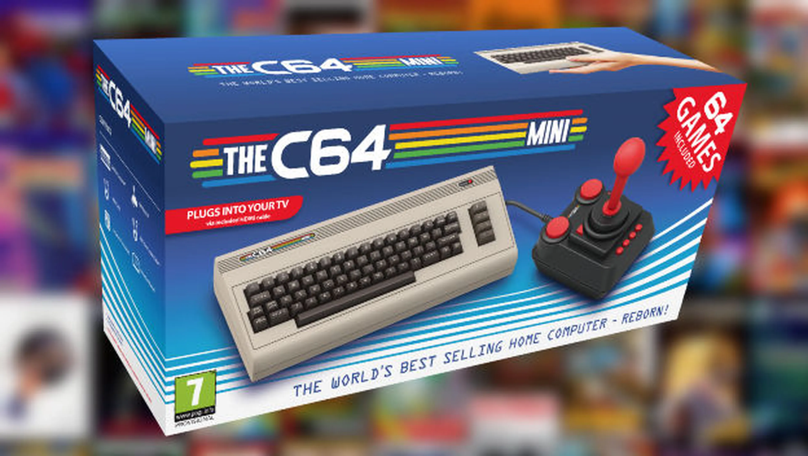

Commodore 64 era una computadora doméstica de 8 bits desarrollada por Commodore International en agosto de 1982 a un precio inicial
de 595 dólares. Sucede a la Commodore VIC-20 y a la Commodore MAX Machine, con 64 kilobytes (65 536 bytes) de RAM, con gráficos y sonido
muy por encima de otros equipos contemporáneos.
Utilizaba una unidad de casete (Datasette) además de una disquetera de 5 1/4 pulgadas (Commodore 1541). Disponía de un teclado profesional
muy robusto, distintas tomas de conexión y poseía infinidad de videojuegos, aplicaciones y gráficos. Contaba con una paleta de 16 colores
y un intérprete BASIC (el Commodore BASIC v2.0). Aceptaba la conexión directa de periféricos sin necesidad de una interfaz de conexión,
(como alguno de sus más directos competidores) incorporando dos puertos de conexión de mandos de juego (joysticks), puertos serie IEC,
RS232 y C2N, salida a televisión, salidas de vídeo compuesto y audio mediante conector DIN de alta fidelidad y un puerto de expansión
para cartuchos.
| Modelo | Año de Lanzamiento | Memoria RAM |
|---|---|---|
| MAX Machine | 1982 | 2 KB |
| Commodore 64 | 1982 | 64 KB |
| Commodore 128 | 1985 | 128 KB |
| Commodore 64 GS | 1990 | 64 KB |